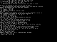
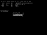
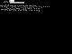
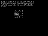
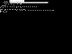

| mips64emul |
| Documentation |
This "documentation" is just a collection of questions and answers and various bits of information. Enjoy! :-)
The emulator could be of interest for academic research and experiments, such as learning how to write an OS for a MIPS-based machine, or profiling SMP, memory usage, or system call patterns.
The emulator is written in C, depends on no external libraries (except X11, which is optional), and should compile and run on any Unix-like system. If it doesn't, that is to be considered a bug. No MIPS compiler toolchain is needed if the program you wish to run in the emulator is already in binary form. No ROM images are needed, the emulator will try to emulate things such as PROM calls by itself. However, if you have a ROM image, it might be possible to run it in the emulator.
(MIPS is a registered trademark of MIPS Technologies. This project is not affiliated with MIPS Technologies in any way whatsoever.)
Apart from the code I have written, some files are copied from other sources such as NetBSD, for example header files containing symbolic names of bitfields in device registers. They are also covered by similar licences. Please check individual files if you plan to reuse code from mips64emul.
Some notes about the list above: The machines above have 64-bit capable CPUs, except most DECstations. There were upgrades from R3000 to R4000 available for some DECstations, but Ultrix was still running in 32-bit mode (I think). Unfortunately, even if most of these machine types have 64-bit CPUs in them (or even 128-bit, the Playstation 2's R5900 CPU is a bit weird), operating systems often run in 32-bit mode on them.
There are other machines that use/used MIPS cpus, for example the Playstation (1) and the Nintendo 64 game systems, but no free OS is ported to those platforms as far as I know, so they might not be too interesting to emulate.
Playstation 2 is among the emulated machine types, but the emulation done by mips64emul is not suitable for playing games. Running Linux and NetBSD is a lot more fun :-)
In addition to specific machine types, a "bare" machine can be emulated. This mode is used when the emulator is started without specifying which machine type to emulate. A bare machine consists of just a CPU and some experimental devices such as:
$ ./configure $ makeThis should work on any Unix-like system. If not, please report that as a bug to me. (Specific snapshots of mips64emul might have problems on different platforms.)
You can use pre-compiled kernels (for example NetBSD or Linux), ROM images, or other programs that are in MIPS binary format. A couple of different file formats are supported (ELF, a.out, ECOFF, SREC, raw binaries).
As an example, let's say you want to emulate a Silicon Graphics O2 machine. This machine type is also known as IP32, in the SGI namespace. Let's also say that you want to run NetBSD on this emulated machine. A pre-compiled kernel for NetBSD/sgimips can be found here: http://ftp.sunet.se/pub/NetBSD/NetBSD-1.6.2/sgimips/binary/kernel/netbsd-INSTALL.gz
Once you have downloaded the kernel and gunzip'd it, you can try it out in the emulator like this:
$ ./mips64emul -G32 -q netbsd-INSTALL-G signifies that we want SGI emulation, and 32 is the SGI-specific machine type. -q supresses debug messages. If everything works like it should, you should see NetBSD's boot messages...
$ ./mips64emul -G32 -q netbsd-INSTALL zs channel 0 had address 0xbfbd9830 [ no symbols available ] CPU clock speed = 3.00Mhz Copyright (c) 1996, 1997, 1998, 1999, 2000, 2001, 2002, 2003 The NetBSD Foundation, Inc. All rights reserved. Copyright (c) 1982, 1986, 1989, 1991, 1993 The Regents of the University of California. All rights reserved. NetBSD 1.6.2 (RAMDISK) #0: Wed Feb 11 06:38:58 UTC 2004 autobuild@tgm.netbsd.org:/autobuild/netbsd-1-6-PATCH002/sgimips/OBJ/autobuild/netbsd-1-6-PATCH002/src/sys/arch/sgimips/compile/RAMDISK 32768 KB memory, 29988 KB free, 0 for ARCS, 1740 KB in 435 buffers mainbus0 (root): SGI-IP32 [SGI, 8], 1 processor cpu0 at mainbus0: MIPS R5000 CPU (0x2321) Rev. 2.1 with built-in FPU Rev. 1.0 cpu0: 32KB/32B 2-way set-associative L1 Instruction cache, 48 TLB entries cpu0: 32KB/32B 2-way set-associative write-back L1 Data cache crime0 at mainbus0 addr 0x14000000: rev 1.1 mace0 at mainbus0 addr 0x1f000000 mace0: isa sts 0 mace0: isa msk 0 com0 at mace0 offset 0x390000 intr 4: ns16550a, working fifo com0: console com1 at mace0 offset 0x398000 intr 4: ns16550a, working fifo pckbc0 at mace0 offset 0x320000 intr 5: stub lpt0 at mace0 offset 0x380000 intr 4: stub mcclock0 at mace0 offset 0x3a0000 mec0 at mace0 offset 0x280000 intr 3: MAC-110 Ethernet, rev 0 mec0: station address 00:00:00:00:00:00 mec0: sorry, this is not a real driver macepci0 at mace0 offset 0x80000 intr 7: rev 1 macepci0: ctrl 0 pci0 at macepci0 bus 0 pci0: i/o space, memory space enabled, rd/line, rd/mult, wr/inv ok biomask 7f netmask 7f ttymask 7f clockmask ff md0: internal 3072 KB image area boot device:and after typing vt100 (or just pressing enter), you'll reach NetBSD's install program. You will not be able to install anything though, as the AHC disk controller isn't emulated yet.root on md0a dumps on md0b WARNING: clock gained 28 days -- CHECK AND RESET THE DATE! root file system type: ffs Terminal type? [vt100] _
To exit the emulator, type CTRL-C. By typing CTRL-B instead, a CTRL-C is sent to the emulated program.
For some emulated machine types, a graphical framebuffer console is supported. NetBSD/pmax (kernel found here: http://ftp.sunet.se/pub/NetBSD/NetBSD-1.6.2/pmax/binary/kernel/netbsd-INSTALL.gz) running on an emulated DECstation 5000 supports this:
$ ./mips64emul -D2 -X -Y2 -q -I1000000 -M12 netbsd-INSTALL-D2 stands for DECstation, type 2; -X means to use X-windows to get a graphical framebuffer; -Y2 is used to scale down the window by a factor 2x2; -q supresses debug output; -I1000000 lets the emulated clock chip on DECstations have a more realistic pace; and -M12 sets the amount of emulated memory to 12 MB. The result should looks something like this:
To run NetBSD/pmax in the emulator (on an emulated DECstation machine), you first need to install NetBSD onto a disk image. To NetBSD, the disk image looks and acts just like a real SCSI disk, but it is just a normal file in the host's filesystem.
You need to do the following:
$ ./configure; make
ftp://ftp.netbsd.org/pub/NetBSD/NetBSD-1.6.2/pmax/binary/kernel/netbsd-INSTALL.gz
ftp://ftp.netbsd.org/pub/NetBSD/iso/1.6.2/pmaxcd.iso
$ dd if=/dev/zero of=netbsd_pmax_rootdisk.img bs=1 count=1 seek=680000000
$ ./mips64emul -D2 -qN -XY2 -I1500000 -d pmaxcd.iso \ -d netbsd_pmax_rootdisk.img netbsd-INSTALL
Then proceed like you would if you would install NetBSD on a real DECstation. Even if the emulator is running on a very fast host system, you should expect the installation to take quite some time.
Here are some screenshots taken during installation:
|  |  |  |  |  |
TODO: The last screenshot above shows where the installation bugs out. gunzip says that the gzip data is invalid; perhaps the bug is that some instruction used by gunzip is not 100% correctly emulated.
Once the installation is completed, following these steps should boot the OS from the root disk image:
ftp://ftp.netbsd.org/pub/NetBSD/NetBSD-1.6.2/pmax/binary/kernel/netbsd-GENERIC.gz
$ ./mips64emul -D2 -qN -XY2 -I1500000 -d netbsd_pmax_rootdisk.img netbsd-GENERIC
TODO: As there are boot programs and kernels on both the CDROM image and on the harddisk image (after installation), it should not be neccessary to have separate kernels in addition to the CDROM/disk images. It should be possible to boot right of the disk image. As of right now, that functionality has not been implemented.
Installing other OSes on other emulated machine types, when that becomes possible, might be done similar to the NetBSD/pmax installation described above.
To sum it up: there is no guarantee that anything specific will run in the emulator, but NetBSD (or possibly Linux) is a good starting point for someone who wants to experiment. Linux kernels don't usually have ramdisks in them, so until some disk controller device has been implemented, NetBSD is the way to go if you want to reach userland.
Also, the set of OSes that work is obviously very different for different emulation modes.
If the emulator is launched without specifying which machine to emulate, it will emulate only a CPU and very few devices. One of those devices is a console putchar() device, at a fixed address.
/* Hello world for mips64emul */
#define PUTCHAR_ADDRESS 0xb0000000
void printchar(char ch)
{
*((volatile unsigned char *) PUTCHAR_ADDRESS) = ch;
}
void printstr(char *s)
{
while (*s)
printchar(*s++);
}
void f(void)
{
printstr("Hello world\n");
for (;;)
;
}
This hello world program is available here as well: hello.c
I'd recommend you build a GCC cross compiler for the mips64-unknown-elf target, and install it. Other compilers might work too, but GCC is good because of its portability. Then try to compile the hello world program:
$ mips64-unknown-elf-gcc hello.c -mips4 -mabi=64 -c $ mips64-unknown-elf-ld -Ttext 0x80030000 -e f hello.o -o hello --oformat=elf64-bigmips $ file hello hello: ELF 64-bit MSB mips-4 executable, MIPS R3000_BE, version 1 (SYSV), statically linked, not stripped $ ./mips64emul -q hello Hello world $ mips64-unknown-elf-gcc hello.c -c $ mips64-unknown-elf-ld -Ttext 0x80030000 -e f hello.o -o hello $ file hello hello: ELF 32-bit MSB mips-3 executable, MIPS R3000_BE, version 1 (SYSV), statically linked, not stripped $ ./mips64emul -q hello Hello worldAs you can see above, a GCC configured for mips64-unknown-elf can produce both 64-bit and 32-bit binaries.
Hopefully this is enough to get you inspired. :-)
However, if you think that you can port an operating system to, say, the Silicon Graphics machine mode of mips64emul and hope that your operating system will run on a real SGI machine, then you will most likely fail. mips64emul simply does not emulate things well enough for that to work. A lot of the devices that are emulated are based on guesswork (for example, by studying code in NetBSD that uses the device, and thereby figure out more or less how the device is supposed to work).
In many cases, hardware devices in mips64emul are only implemented well enough to fool eg. NetBSD that they are working correctly, while in fact they don't work very much at all. Please keep this in mind, if you plan to use mips64emul when porting your code to MIPS.
$ ./mips64emul -D2 -q -d pmax_diskimage.fs netbsd-pmax-INSTALL
It is possible to have more than one disk. For each -d argument, a disk image is added; the first will be SCSI target 0, the second will be target 1, and so on.
$ ./mips64emul -D2 -q -d disk0.raw -d disk1.raw -d disk2.raw netbsd-pmax-INSTALLIf a filename has a "C:" prefix, or ends with ".iso", then it is treated as a CDROM device instead of a normal disk device. For example, the following command would start the emulator with two CDROM images, and one harddisk image:
$ ./mips64emul -D2 -q -d image.iso -d disk0.img -d C:second_cdrom.img netbsd-pmax-INSTALL
$ ./mips64emul -qu1 pmax_bin_hostname tab.csbnet.se $ ./mips64emul -qu1 pmax_bin_date Sun Jan 25 02:26:14 GMT 2004 $ ./mips64emul -qu1 pmax_bin_sleep usage: pmax_bin_sleep seconds $ ./mips64emul -qu1 pmax_bin_sleep 5 $ ./mips64emul -qu1 pmax_bin_syncThere's also an Ultrix4 emulation mode:
$ ./mips64emul -qu2 ultrix4_bin_date UNIMPLEMENTED ultrix syscall 54 UNIMPLEMENTED ultrix syscall 62 Mon Feb 9 12:50:59 WET 2004 $ ./mips64emul -qu2 ultrix4_bin_hostname tab.csbnet.seUserland syscall emulation is still in its beginning stages, so almost nothing works.
Irix userland emulation might also be possible to add.
Raw PROM images from real machines can, in a few cases, be used. One case which I've tried is to use a DECstation 5000/125 PROM image. ROM images from other machines might work as well, but ROM code is usually much more sensitive to correctness of the emulator than operating system kernels or userland programs are.
The image first needs to be extracted from the machine. I presume that these PROMs are not legal to redistribute, so you really need to extract the PROM from a physical machine that you own. There are several ways to do this.
The easiest way is to hook up a serial console. The terminal must be able to capture output to a file.
These are approximately the commands that I used:
>>cnfg Show machine configuration
>>printenv Show environment variables
>>setenv more 0 This turns off the More messages
>>e -x 0xbfc00000:0xbfffffff Dump the PROM data
Remember that DECstations are little endian, so if the dump data looks like this:
bfc00000: 0x0bf0007e
then the bytes in memory are actually 0x7e, 0x00, 0xf0, and 0x0b.
At 9600 bps, about 10KB can be dumped per minute, so it takes a while. Once enough of the PROM has been dumped, you can press CTRL-C to break out. Then, restore the more environment variable:
>>setenv more 24
Now, convert the data you just saved (little-endian words -> bytes), and store in a file. Let's call this file DECstation5000_125_promdump.bin.
$ ./decprom_dump_txt_to_bin DECstation5000_125_promdump.txt DECstation5000_125_promdump.bin
This binary image can now be used in the emulator:
$ ./mips64emul -D3 -Q -M128 -q 0xbfc00000:DECstation5000_125_promdump.bin KN02-BA V5.7e ?TFL: 3/scc/access (1:Ln1 reg-12: actual=0x00 xpctd=0x01) [KN02-BA] ?TFL: 3/scc/io (1:Ln0 tx bfr not empty. status=0X 0) [KN02-BA] ... --More--?TFL: 3/scsi/cntl (CUX, cause= 1000002C) >>? ? [cmd] boot [[-z #] [-n] #/path [ARG...]] cat SCRPT cnfg [#] d [-bhw] [-S #] RNG VAL e [-bhwcdoux] [-S #] RNG erl [-c] go [ADR] init [#] [-m] [ARG...] ls [#] passwd [-c] [-s] printenv [EVN] restart script SCRPT setenv EVN STR sh [-belvS] [SCRPT] [ARG..] t [-l] #/STR [ARG..] unsetenv EVN >>cnfg 3: KN02-BA DEC V5.7e TCF0 (128 MB) (enet: 00-00-00-00-00-00) (SCSI = 7) 0: PMAG-BA DEC V5.3a TCF0 >>printenv boot= testaction=q haltaction=h more=24 #=3 console=* osconsole=3 >>(Note: at the moment, this doesn't work. I must have broken something when fixing something else, but this is what it looked like at the time.)
During bootup, the PROM complains a lot about hardware failures. That's because the emulator doesn't emulate the hardware well enough yet.
The command line options used are: -D3 for DECstation model 3 (5000/xxx), -Q to supress the emulator's own PROM call emulation, -M128 for 128MB RAM (because mips64emul doesn't correctly emulate memory detection well enough for the PROM to accept, so it will always believe there is 128MB ram anyway), and -q to supress debug messages. The 0xbfc00000 in front of the filename tells mips64emul that it is a raw binary file which should be loaded at a specific virtual address.
$Id: index.html,v 1.18 2004-04-09 05:13:35 debug Exp $
{kind=link}
{kind=link}
{kind=link}
{kind=link}
{kind=link}
{kind=link}